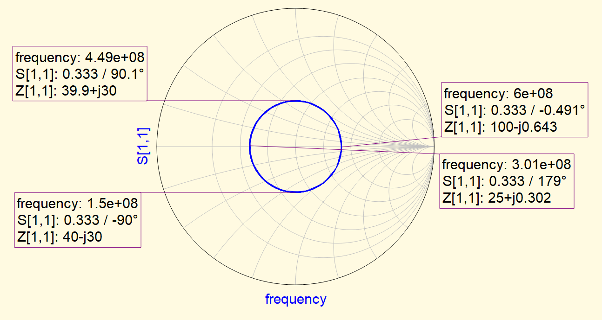

Comparing common attenuator architectures

This is the second installment of the RF Design Growth series, where I document my progress and share my knowledge and insights gained as I advance in my career as a Junior RF designer. The purpose of this series is to share my learning journey, challenges and successes as a RF designer, that could be useful for others in the same field. This series will focus on consolidating my understanding of RF design concepts, troubleshooting techniques and real-world applications.
Discontinuities in RF or high-speed digital signals cause performance degradation and can sometimes result in complete loss of communication. Vias become a subject of discussion when used on RF or high-speed data paths as they inherently introduce many discontinuities.
This article will delve into the specific challenges that vias pose in RF and high-speed digital signal transmission. It will focus on three key areas: input inductance, barrel impedance, and stub resonance. These factors can significantly impact signal integrity and need to be carefully considered and managed when designing PCBs for RF or high-speed applications. We will explore how these factors can be measured and mitigated to ensure optimal performance of your RF or high-speed digital signal paths.
The transitions between microstrip and via add inductance to the path. This can be understood by the decrease in electric field about the trace increasing the characteristic impedance over a short length. The inductance of the line can be approximated using the formula presented below,
\[ x = \sqrt{1 + \left( \frac{W}{2L} \right)^2} \]
\[ L \approx 2L \left\{ \ln \left[ \left( \frac{2L}{W} \right) \left( 1 + x \right) \right] - x + \frac{\mu_R}{4} + \frac{W}{2L} \right\} \]
Where,
The most convenient way to model the via is as a coaxial transmission line. Thus, to match the impedance of the via to the system impedance you will need to select the drill diameter and ground via placement to ensure the ratio of outer-barrel diameter to inner-ground via ring diameter is close to the required impedance.
For a coaxial cable the distributive properties are,
\[ C = \frac{2 \pi \epsilon}{\ln \left( \frac{b}{a} \right)}\]
\[ L = \frac{\mu}{2\pi} \ln \left( \frac{b}{a} \right) \]
\[ Z_0 = \frac{1}{2\pi} \sqrt{\frac{\mu}{\epsilon}} \ln \left( \frac{b}{a} \right) \approx \frac{60}{\sqrt{\epsilon_R}} \ln \left( \frac{b}{a} \right) \]
The cutoff frequency of a coaxial line occurs when the circumference at the midpoint inside the dielectric is one wavelength [1]. At this point the via will begin to allow higher-order propagation modes, specifically the TE11 mode.
\[ \lambda_c = \pi \left( \frac{a+b}{2} \right) = \frac{c}{f_c \sqrt{\mu_R \epsilon_R}} \]
\[ f_c = \frac{2c}{(a+b)\sqrt{\mu_R \epsilon_R}} \]
If one is not diligent then adding a via will add a stub. When transitioning from an external layer to an internal layer a stub will be created from the internal layer to the opposite external layer. The stub effects can be removed by
However, sometimes cost constraints may inhibit the use of these two options; or, perhaps for the operating frequencies being used the performance degradation is acceptable in which case one approach is to make sure the internal layer is close to the opposite external layer to reduce the stub length. To understand if the remaining stub length is short enough for the application the cutoff frequency can be easily estimated.
Assume there is some frequency \( f_{stub} \) for which the stub length resonates at \( \frac{1}{4} λ_{stub} \)
\[ \frac{1}{4} \lambda_{stub} = L_{stub} \]
\[ \frac{1}{4} \frac{c}{f_{stub} \sqrt{\epsilon_R}} = L_{stub} \]
\[ f_{stub} = \frac{c}{4 L_{stub} \sqrt{\epsilon_R}} \]
Sometimes there is a need to verify that the characteristic impedance of a transmission line meets the intended design. A quick and practical approach to measuring the characteristic impedance using a VNA
For \( \beta l = \theta_0 \)
\[ Z_{in}(\theta_0) = Z_0 \left( \frac{Z_L + j Z_0 \tan{\theta_0}}{Z_0 + j Z_L \tan{\theta_0}} \right) \]
For \( \beta l = \theta_0 + \frac{\pi}{2} \)
\[ Z_{in}(\theta_0 + \frac{\pi}{2}) = Z_0 \left[ \frac{Z_L + j Z_0 \tan{(\theta_0 + \frac{\pi}{2})}}{Z_0 + j Z_L \tan{(\theta_0 + \frac{\pi}{2})}} \right] \]
\[ \tan{\left( \theta_0 + \frac{\pi}{2} \right)} \approx - \frac{1}{\tan{\theta_0}} \]
Then we multiply the two impedances together:
\[ Z_{in}(\theta_0) Z_{in}\left( \theta_0 + \frac{\pi}{2} \right) = Z_0^2 \left( \frac{Z_L + j Z_0 \tan{\theta_0}}{Z_0 + j Z_L \tan{\theta_0}} \right) \left( \frac{Z_L - j Z_0 \frac{1}{\tan{\theta_0}}}{Z_0 - j Z_L \frac{1}{\tan{\theta_0}}} \right) \]
\[ Z_0 = \sqrt{ Z_{in}\left( \theta_0 \right)Z_{in}\left( \theta_0 + \frac{\pi}{2} \right) } \]
The method explained above uses the specific case where \( \theta_0 = 0 \) rad. Notice how after multiplication there is no longer a dependency on the load impedance. This is the reason any load resistance may be used in step 2. Practically speaking if the load resistance is too high or too low it becomes difficult to read the values on the smith chart.
Example,
Because this method works independent of the load impedance, we choose to use 100 Ω to make the zero-crossings more apparent.
Figure 1: Ideal transmission line under test in QUCS
Figure 2: Four points on the S11 plot in the smith chart
\[ \begin{aligned} Z_0 &= \sqrt{ \left( 100 - j0.643 \right) \left( 25 + j0.302 \right) } \\ Z_0 &= \sqrt{2500.194 + j14.1} \\ Z_0 &\approx 50.00 \end{aligned} \]
\[ \begin{aligned} Z_0 &= \sqrt{ \left( 39.9 + j30 \right) \left( 40 - j30 \right) } \\ Z_0 &= \sqrt{2496 + j3} \\ Z_0 &\approx 49.96 \end{aligned} \]
The thermal behavior of resistors is well understood. The characteristic of the resistivity over temperature changes based on the material used. Carefull selection of resistors or resistive films with NTC and PTC can yield a cheap and effective way to compensate for path gain variation over temperature. This type of passive attenuation device is known as a temperature compensating attenuator (TCA).
Manufacturers of temperature compensating attenuators include,
In my experience it is quite difficult to find the perfect thermal PAD that will produce a flat temperature curve. Often the non-linear behavior of the thermal PAD will dominate as the thermal profile becomes flatter.
The gain ripple in a system can be reduced by attenuating the reflections on a transmission line by adding attenuators at either end. This is useful when there are long transmission lines in the gain path. In order to minimize gain ripple due to input and output test equipment add an attenuator at the output of the signal generator and at the input of the DUT.
[1] Coax Cutoff Frequency
[2] Lecture Slides